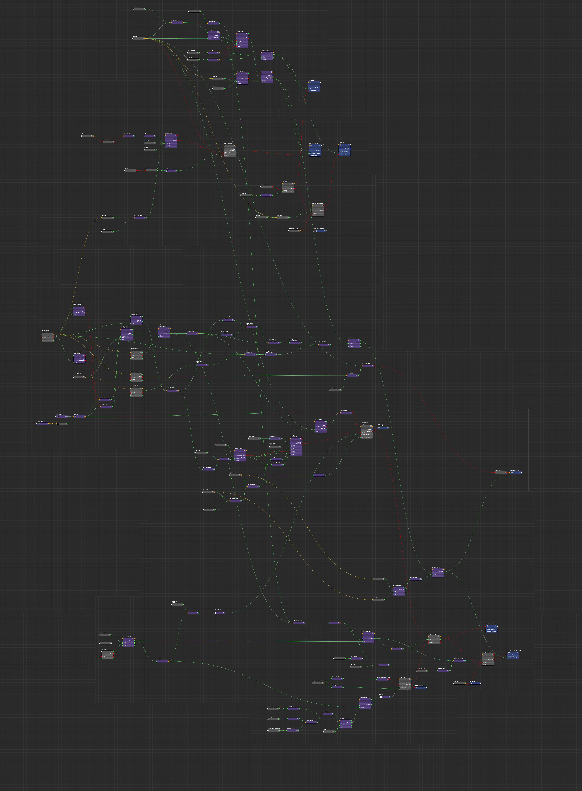
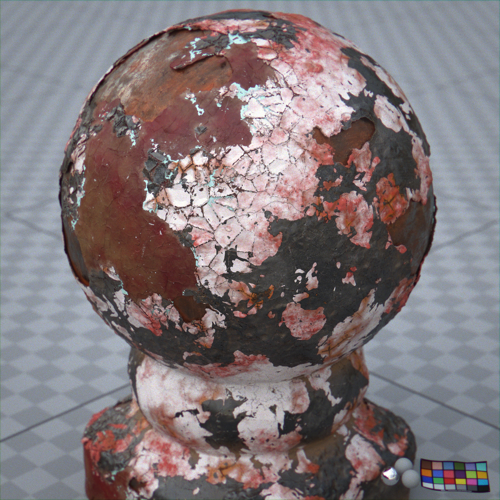
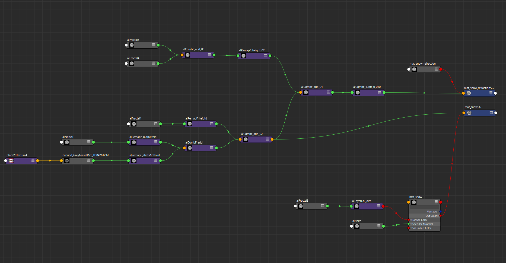
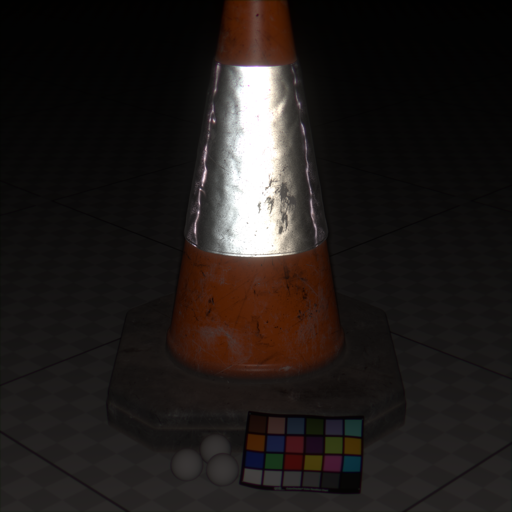
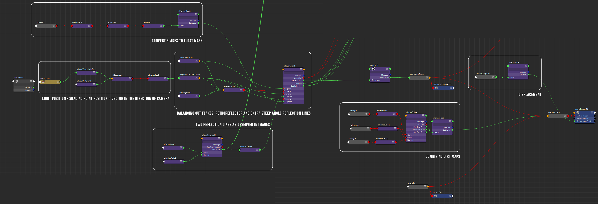

Beer Foam Shader
I started not so procedural, placing spheres on a plane looking at the distribution in the reference and extracted a displacement map from that. This is easy, I just apply a y-axis black and white ramp projection to get values between 0-1 and render it out from the top camera with a surfaceshader. I did the same for the small bubbles, although I made those tileable since there have to be a ton of them. I also used some noise procedurals for the smaller bubbles.
I went with a volume + spec layer approach. The volume has the same displacement setup as the spec layer, only with inverted bubbles. I tried using 2 spec lobes, one for the inside of the bubble and one for the outside, but this didn't really work. For a long time with this challenge I struggled using the volume render times. I needed 10+ bounces to get enough light to scatter and it just took too long. In the end I ended up using 1 volume bounce with a little bit of volume emission. It's a dirty cheat that in this case doesn't look too different from the full scattering. It also cut my rendertime by about 6 times. Once I had figured this out my iterations were a lot faster and better.
Chipped Paint Shader
All of the masking is procedural. The paint chipping is done by remapping a voronoi noise with a fractal, so at certain points the cracks are wider and at certain points is thinner. I used multiple copies of the same base object combined with opacity mapping to achieve the different layers of the object. This achieved much more satisfying results than just using displacement variations since there is correct shadowing. From there on it's just additive layering of displacement maps, so every layer takes the displacement of the previous layer + it's own. The individual layers are really simple, and the results is quite nicely complex.
 Snow Shader
Using Arnold & alshaders. Purely surface shaders this time, next up I want to try with a combination of a surface and a volume. The setup is pretty simple. The main surface is an alSurface shader, using sss and two specular lobes. The first lobe has an alflake material, for the odd high intensity specular highlights. The second lobe is much broader and helps define the volumes of the geometry. The displacement is a combination of a really random displacement map of some ground - for the big shapes, and finer fractals layered on top. I also duplicated the geometry, using the same base displacement but with another fractal displacment layered on top. Then I pushed it in slightly, so it only sticks out of the surface in small little blocks. I made this more of a very simple ice-like material that doesn't cast shadows. Key to getting a nice feel to the image was using a lot of ray bounces. The dropoff point after which I couldn't see a difference anymore was about 10 diffuse bounces. Due to the directional sss model, it took about an hour to clear up the SSS noise. There's a bit of post work on the image - some bloom and glint and chromatic aberration to help it sell more as a photograph.

Retroreflector (Traffic cone) Shader
As you can probably extract from the name, retroreflectors are surfaces that reflect light in exactly the same direction as it came from. Here's my entry, super heavily inspired by the work of @anthonypilon. I decided to go for an approach which tweaks the normals of the flakes to the camera position, instead of trying with geometry. Using geometry, the effect was really simple to get but when trying to wrap that geo around the model, the cubes got skewed too much and they lost their retroreflective property. I couldn't see a way around this, so bsdf approach it was. There's plenty wrong with my try, but I can't exaggerate how much I learned with this one. For now, here's my final images. Arnold as usual.
 Procedural Metal Welding Shader
This is one I never finished, I created a prototype but then never had time to finish it up & adjust the code so it can fit into any pipeline. I’ve attached the OSL code just in case anyone is curious. I devised a little algorithm to calculate the displacement of the weld points. First I generate curves from edge loop and resample with point count equal to welding frequency. Then:
// - For every shading point: // -- Calculate the distance to every curve point // -- Compare distance to user-set welding radius to determine displacement amount (could use a ramp to look up a certain value) // -- If distance to point N is smallest and if distance to point N+1 is also within the radius: // ---- Add displacements of both lookups of N and N+1 float rand(float n){ return sin(n) * 43758.5453123 - floor(sin(n) * 43758.5453123); } shader weld( float radius = 0.1, float disp_height = 1.0, vector distort = vector(0), float burn_radius = 1.0, output vector disp_rand_burn = vector(0) ) { float x[63] = {}; // manually enter x coords here float y[63] = {}; // manually enter y coords here float z[63] = {}; // manually enter z coords here float distances[63]; int min_dist_cv = 0; vector shading_pos = P; float min_dist = 9999999999.0; string input_tex = "C:/ZENO_2019/projects/shaders_xyz/challenge_10_weld/src/weld_05.tiff"; for (int i = 0; i < 62; i++){ point pos = point(x[i], y[i], z[i]); pos += distort; // find distance between two points float distance = sqrt((P[0] - pos[0])*(P[0] - pos[0]) + (P[1] - pos[1])*(P[1] - pos[1]) + (P[2] - pos[2])*(P[2] - pos[2]) ); distances[i] = distance; if (distance < min_dist){ min_dist = distance; min_dist_cv = i; } } if (distances[min_dist_cv] < burn_radius){ disp_rand_burn[2] = 1.0 - (distances[min_dist_cv] / burn_radius); } // int seed = 8; if ((min_dist < radius)){ float min_dist_norm = min_dist/radius; float disp_lookup = texture(input_tex, min_dist_norm, 0.0); disp_rand_burn[0] += disp_lookup; disp_rand_burn[1] = rand(min_dist_cv/float(62)); if (min_dist_cv < 62 && (distances[min_dist_cv+1] < radius)){ float min_dist_1_norm = distances[min_dist_cv+1]/radius; float disp_lookup = texture(input_tex, min_dist_1_norm, 0.0); disp_rand_burn[0] += disp_lookup; } if (min_dist_cv > 0 && (distances[min_dist_cv-1] < radius)){ float min_dist_2_norm = distances[min_dist_cv-1]/radius; float disp_lookup = texture(input_tex, min_dist_2_norm, 0.0); disp_rand_burn[0] += disp_lookup; } } disp_rand_burn[0] = (disp_rand_burn[0]/2.0) * disp_height; }
Bread Shader (unfinished)
This was an insanely hard challenge, and I definitely didn’t achieve the look I wanted to.. I’ll try again in a year or 5. (Hindsight; this was before randomwalk SSS models!) The soft area is procedural geometry made through volumes in houdini, then meshed. The current node graph is straightforward, I just scatter some points in the geometry, use a few of those to calculate a voronoi, combine a few voronois, and then run everything through a custom deformer to create the swirly effect. Then I convert the vdb volume to a polygon mesh to render it. (All to avoid having to raymarch volumes at rendertime). The only interesting parts are the volume wrangle and point wrangle nodes.


The volume wrangle code, this is to calculate a custom voronoi (see my previous post with the .osl shader) from a given point cloud:
int handle = pcopen(1, "P", @P, 10.0, 5); float md = 10000.0; float lMd = md; float lnDist; vector mo; float smoothing = 0.05; // loop over every point while(pciterate(handle) > 0){ // get P vector P; int success = pcimport(handle, "P", P); vector r = @P - P; float d = dot(r, r); if (d < md){ md = d; mo = r; } } int handle2 = pcopen(1, "P", @P, 10.0, 5); // loop over every point while(pciterate(handle2) > 0){ // get P vector P; int success = pcimport(handle2, "P", P); vector r = @P - P - mo; //r *= 1-smoothing; if (dot(r, r) > 0.00001){ lnDist = dot(mo + r*0.5, normalize(r)); // polynomial smooth float a = lMd; float b = lnDist; float c = (lnDist*0.5 + 0.5)*smoothing; float f = max(0., 1. - abs(b - a)/c); lMd = min(a, b) - c*.25*f*f; } } @distance = 1.0 - max(lMd, 0.0);
Then I run the geometry through a custom deformer (point wrangle node) to create the "swirling" effect. Essentially it pushes the point outwards from the center of the bread (more in the middle to none at the edges). I remap the translation distance of the points to the normalized distance between the point position and the distance of the edge of the bread to the center of the bread.
float PyOrig = @P.y; vector c = {0.0, 0, -10.0}; vector clampedP = @P; clampedP.y = 0; vector position = clampedP; position -= c; float magn = length(position); vector rayD = (clampedP - c) * 1000; rayD.y = 0.0; vector hittP, hitUVW; i@hitPrim = intersect(1, clampedP, rayD, hittP, hitUVW); float distanceToEdge = length(hittP - c); float low1 = 0.0; float low2 = 0.0; float high1 = distanceToEdge; float high2 = 1.0; float remapped = low2 + (magn - low1) * (high2 - low2) / (high1 - low1); position = position + position*(1-remapped); @P = position + c; @P.y = PyOrig;